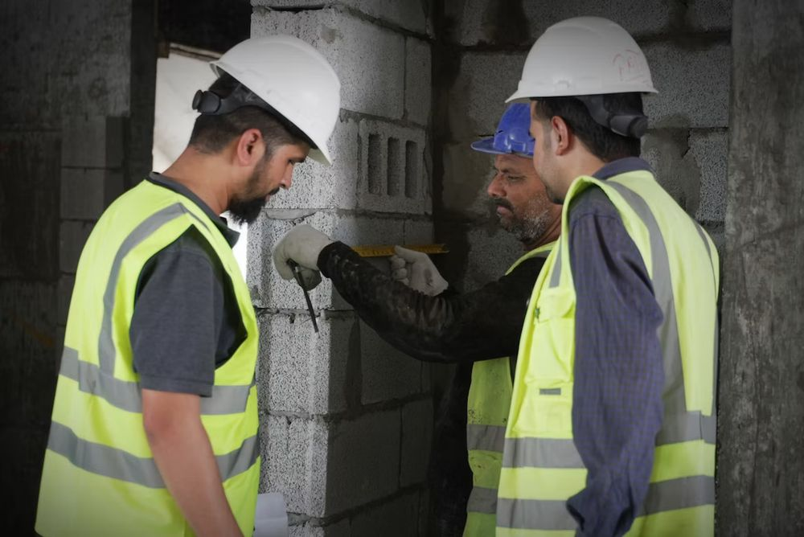
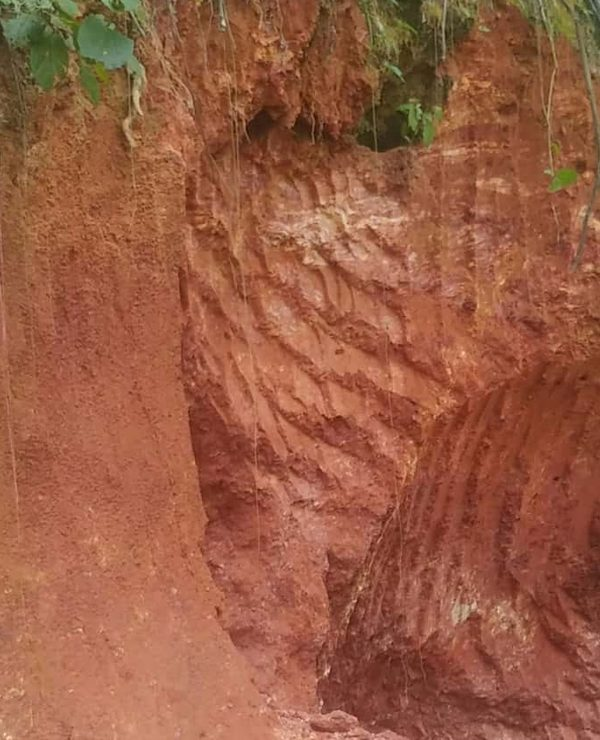

Quem assina o laudo
Eng. André Victor Moreira Costa, engenheiro de produção e de segurança do trabalho, CREA-RJ 2014128139. Atuo com laudos, vistorias, perícia e segurança do trabalho, e já participei da implantação de sistemas de gestão ISO em empresas.
Você fala diretamente comigo, do orçamento à entrega do laudo.
O que é o laudo de vistoria predial
É um documento técnico, assinado por engenheiro, que registra o estado real de uma edificação: o que está em ordem, o que apresenta problema, a gravidade e o que fazer. O trabalho segue as normas aplicáveis, como a ABNT NBR 16747 (inspeção predial) e, para acessibilidade, a ABNT NBR 9050.
Quando contratar
- Fissuras, infiltrações, desplacamento de revestimento ou ferragem aparente.
- Compra, venda ou locação de imóvel e entrega de obra.
- Exigência de condomínio, seguradora, órgão público ou processo.
- Adequação de rampas, banheiros, portas, circulação e sinalização (acessibilidade).
- Dúvida técnica sobre segurança de uma estrutura ou instalação.
O que a vistoria avalia

- Elementos aparentes: estrutura, fachada, cobertura, impermeabilização, instalações e áreas comuns.
- Registro fotográfico com localização de cada ocorrência.
- Classificação das anomalias e recomendação de prioridade.
- Para acessibilidade: percursos, rampas, portas, sanitários, sinalização e vagas, conforme a NBR 9050.
A vistoria avalia o que é possível constatar no local. Ensaios ou sondagens complementares, quando necessários, são indicados no laudo.
Em campo: vistoria e medição

Cada vistoria começa no local: observar, medir, fotografar e registrar o que está acontecendo, para só então concluir. Isso vale para um prédio, uma escola ou uma encosta.
Cada tipo de edificação ou terreno pode exigir profissional ou estudo específico. Se o seu caso fugir da minha atribuição, eu aviso antes de começar.
Como funciona
- Você conta o caso pelo WhatsApp: endereço, tipo de imóvel, o problema e prazos.
- Recebe o orçamento em até 24 horas úteis, com escopo e taxa do CREA.
- Vistoria no local, agendada com você.
- Entrega do laudo com fotos, análise, recomendações e ART.
O que informar para o orçamento
- Cidade, bairro e tipo de imóvel (condomínio, escola, loja, casa).
- O problema ou a dúvida principal.
- Fotos, documentos e prazos, se existirem.
Não precisa saber o nome técnico do serviço. Uma descrição simples já basta.
Perguntas frequentes
O laudo sai com ART?
Sim. Por lei (Lei nº 6.496/1977), serviços de engenharia, como laudos e vistorias, são formalizados com ART, que eu registro no CREA-RJ antes de começar. É a ART que identifica o responsável técnico e dá respaldo ao documento perante condomínios, empresas e órgãos. A taxa do CREA é informada na proposta.
O laudo tem validade legal?
Sim. O laudo é um documento técnico assinado por engenheiro registrado no CREA-RJ e formalizado com ART. Cada órgão ou processo pode ter exigências próprias: me diga quem vai receber o documento e eu confirmo antes de começar.
Em quanto tempo recebo o orçamento?
Em até 24 horas úteis depois que você enviar as informações do caso.
Atende em todo o Rio de Janeiro?
Atendo na cidade do Rio de Janeiro e região. Para outros locais, fale comigo e avaliamos a viabilidade.
Conte o que você precisa avaliar
Uma descrição simples já basta para começar.
Pedir orçamento no WhatsAppWhatsApp 21 99419-2878 · engperitoandre@gmail.com